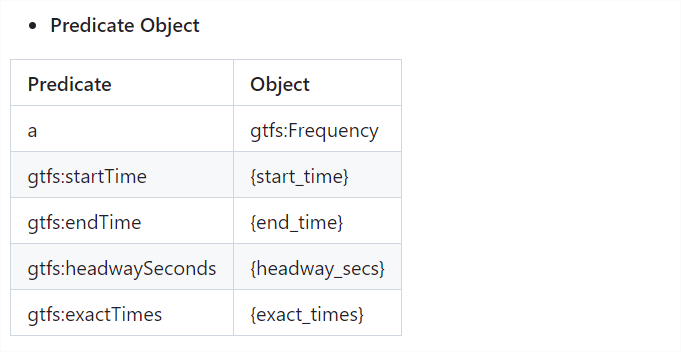

class: center, middle # RMLdoc demo ??? Notes for the _first_ slide! --- # Agenda 1. Introduction 2. Installation 3. Usage 4. Example --- # Installation **From pypi:** ```bash pip install rmldoc ``` **From source:** ```bash git clone https://github.com/oeg-upm/rmldoc.git cd rmldoc pip install -e . ``` --- # Usage ```bash usage: rmldoc [-h] -i INPUT_MAPPING_PATH [-o OUTPUT_PATH] optional arguments: -h, --help show this help message and exit -i INPUT_MAPPING_PATH, --input_mapping_path INPUT_MAPPING_PATH Path to the input mapping file in RML format. -o OUTPUT_PATH, --output_path OUTPUT_PATH Path to save the generated document. -y, --yatter Enable yatter option to read yarrrml mappings ``` --- # RMLdoc Metadata: Contributor ```turtle map:person_000 <http://purl.org/dc/terms/contributor> <http://xmlns.com/foaf/0.1/Person> ; rdfs:label "Jhon Toledo Barreto" ; <http://xmlns.com/foaf/0.1/mbox> <mailto:john@doe.com> . map:person_001 <http://purl.org/dc/terms/contributor> <http://xmlns.com/foaf/0.1/Person> ; rdfs:label "Ana Iglesias-Molina" . ``` Output: --- # RMLdoc Metadata: Dataset ```turtle map:rules_000 schema:contributor map:person_000, map:person_001 ; <http://rdfs.org/ns/void#exampleResource> map:map_stoptimes_000 ; rdf:type schema:Dataset; schema:version "0.1.0"; schema:title "GTFS-Madrid-Bench CSV mapping excerpt"; schema:dateCreated "03-05-2024"; schema:description "RML mapping with a subset of the GTFS-Madrid-Bench mapping for CSV files.". ``` Output: --- # RML visualization: Namespaces ```turtle @prefix gtfs: <http://vocab.gtfs.org/terms#>. ``` Output: --- # RML visualization: Source ```turtle <frequencies> a rr:TriplesMap; rml:logicalSource [ a rml:LogicalSource; rml:source "/data/FREQUENCIES.csv"; rml:referenceFormulation ql:CSV ]; ``` Output: --- # RML visualization: Subject ```turtle rr:subjectMap [ a rr:SubjectMap; rr:template "http://transport.linkeddata.es/madrid/metro/frequency/{trip_id}-{start_time}"; ]; ``` Output: --- # RML visualization: Predicate Object Output:  --- # RDF triples visualization Output: --- # Join Condition visualization Output: --- class: center, middle That's all folks (for now)!